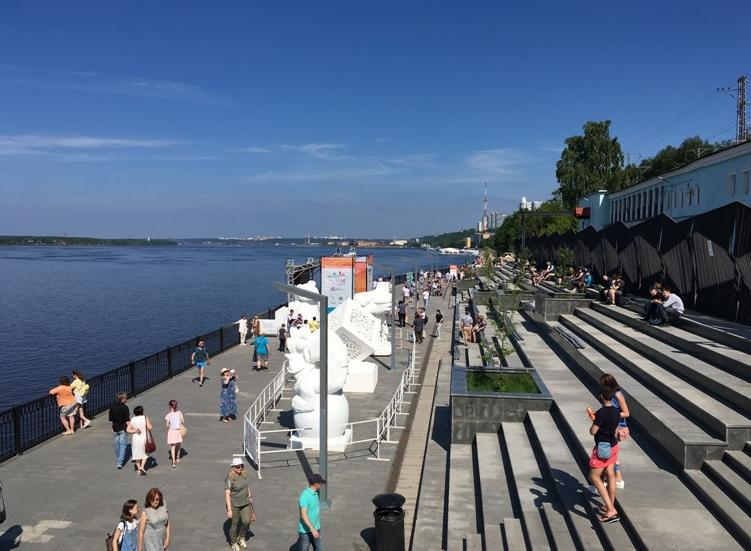

6. Набережная Камы
Центральная набережная Камы, район речного вокзала · Найти на Яндекс Картах

История места
Кама играла важную роль в возникновении и развитии Перми. Ещё до строительства завода здесь существовало место для причаливания судов и торговли.
Близость большой реки была одним из преимуществ Егошихинского поселения при выборе центра будущего наместничества. Речные пути связывали город с другими территориями и поддерживали его экономику.
Значение для Перми и России
На этой остановке раскрывается связь географии и истории. Для Прикамья Кама стала основой транспортных и торговых связей; для России — частью системы внутренних водных путей.